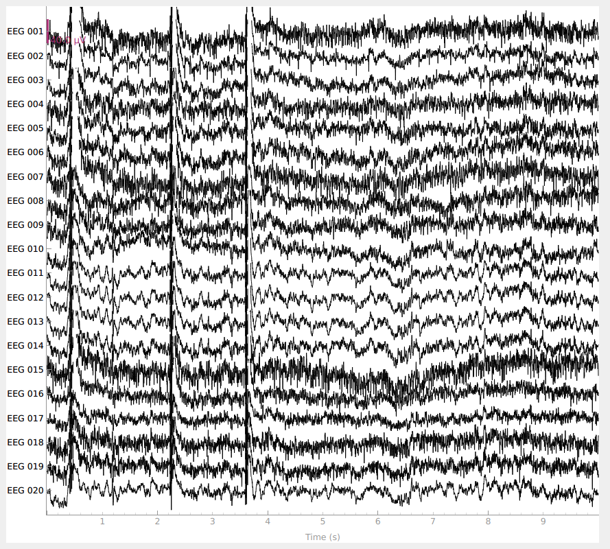
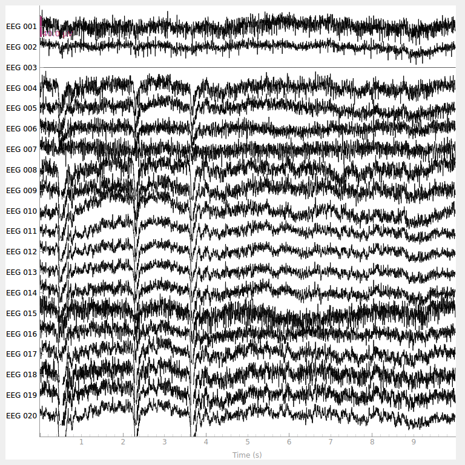

Note
Click here to download the full example code
Modifying data in-place¶
Many of MNE-Python’s data objects (Raw, Epochs, Evoked,
etc) have methods that modify the data in-place (either optionally or
obligatorily). This can be advantageous when working with large datasets
because it reduces the amount of computer memory needed to perform the
computations. However, it can lead to unexpected results if you’re not aware
that it’s happening. This tutorial provides a few examples of in-place
processing, and how and when to avoid it.
As usual we’ll start by importing the modules we need and loading some example data:
import os
import mne
sample_data_folder = mne.datasets.sample.data_path()
sample_data_raw_file = os.path.join(sample_data_folder, 'MEG', 'sample',
'sample_audvis_raw.fif')
# the preload flag loads the data into memory now
raw = mne.io.read_raw_fif(sample_data_raw_file, preload=True)
raw.crop(tmax=10.) # raw.crop() always happens in-place
Out:
Opening raw data file /home/circleci/mne_data/MNE-sample-data/MEG/sample/sample_audvis_raw.fif...
Read a total of 3 projection items:
PCA-v1 (1 x 102) idle
PCA-v2 (1 x 102) idle
PCA-v3 (1 x 102) idle
Range : 25800 ... 192599 = 42.956 ... 320.670 secs
Ready.
Reading 0 ... 166799 = 0.000 ... 277.714 secs...
Signal processing¶
Most MNE-Python data objects have built-in methods for filtering, including
high-, low-, and band-pass filters (filter), band-stop filters
(notch_filter),
Hilbert transforms (apply_hilbert),
and even arbitrary or user-defined functions (apply_function).
These typically always modify data in-place, so if we want to preserve
the unprocessed data for comparison, we must first make a copy of it. For
example:
original_raw = raw.copy()
raw.apply_hilbert()
print(f'original data type was {original_raw.get_data().dtype}, after '
f'apply_hilbert the data type changed to {raw.get_data().dtype}.')
Out:
original data type was float64, after apply_hilbert the data type changed to complex128.
Channel picking¶
Another group of methods where data is modified in-place are the channel-picking methods. For example:
print(f'original data had {original_raw.info["nchan"]} channels.')
original_raw.pick('eeg') # selects only the EEG channels
print(f'after picking, it has {original_raw.info["nchan"]} channels.')
Out:
original data had 376 channels.
Removing projector <Projection | PCA-v1, active : False, n_channels : 102>
Removing projector <Projection | PCA-v2, active : False, n_channels : 102>
Removing projector <Projection | PCA-v3, active : False, n_channels : 102>
after picking, it has 60 channels.
Note also that when picking only EEG channels, projectors that affected only the magnetometers were dropped, since there are no longer any magnetometer channels.
The copy parameter¶
Above we saw an example of using the copy method to facilitate
comparing data before and after processing. This is not needed when using
certain MNE-Python functions, because they have a function parameter
where you can specify copy=True (return a modified copy of the data) or
copy=False (operate in-place). For example, mne.set_eeg_reference is
one such function; notice that here we plot original_raw after the
rereferencing has been done, but original_raw is unaffected because
we specified copy=True:
rereferenced_raw, ref_data = mne.set_eeg_reference(original_raw, ['EEG 003'],
copy=True)
original_raw.plot()
rereferenced_raw.plot()
- 
- 
Out:
EEG channel type selected for re-referencing
Applying a custom EEG reference.
Another example is the picking function mne.pick_info, which operates on
mne.Info dictionaries rather than on data objects. See
The Info data structure for details.
Summary¶
Generally speaking, you should expect that methods of data objects will
operate in-place, and functions that take a data object as a parameter will
operate on a copy of the data (unless the function has a copy parameter
and it defaults to False or you specify copy=False).
During the exploratory phase of your analysis, where you might want
to try out the effects of different data cleaning approaches, you should get
used to patterns like raw.copy().filter(...).plot() or
raw.copy().apply_proj().plot_psd() if you want to avoid having to re-load
data and repeat earlier steps each time you change a computation (see the
In-place operation section for more info on method chaining).
Total running time of the script: ( 0 minutes 7.148 seconds)
Estimated memory usage: 487 MB